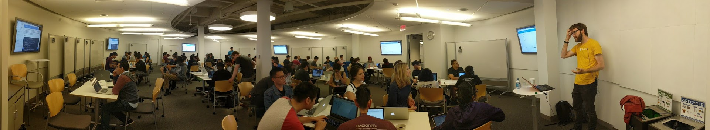

I'm Abe Haskins :D
I write code, I'll be better at it tomorrow.
Work: abehaskins@google.com
Personal: abeisgreat@abeisgreat.com
Blog: abe.ghost.io
Projects
apil.ist - my favorite APIs
jpg.cool - instant images (try jpg.cool/fish.gif)
new_on_itch - a codeless Twitter bot
Videos
I/O '17 Guide - Firebase AppShip3000
Launching AppShip3000 with Abe Haskins - #AskFirebase
Can I use Cloud Functions with Unity? - #AskFirebase
Getting Started with Firebase for Unity
Talks
Photo Search in 15 minutes (Algolia Search Party, August '17)
Cloud Functions, Testability, and Open Source (Google I/O '17)
Gaming Analytics for Firebase (GDC '17)
Firebase for Games (Firebase Dev Summit '16)
Podcasts
GCPPodcast 29 - The New Firebase with Abe Haskins and Doug Stevenson